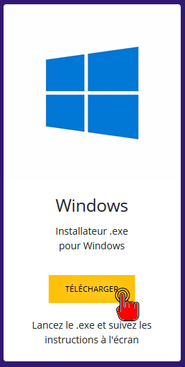
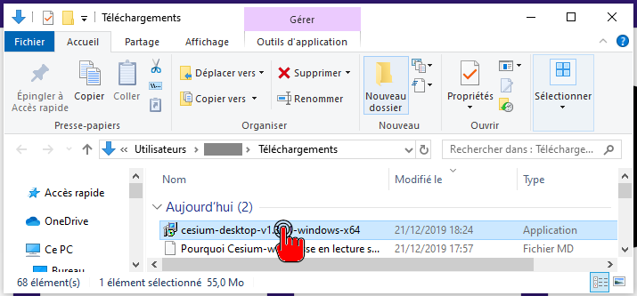
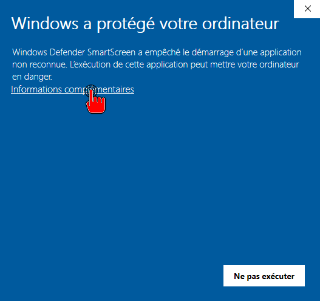
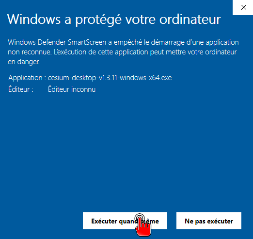
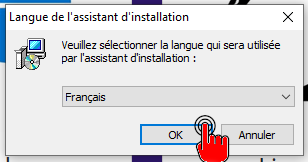
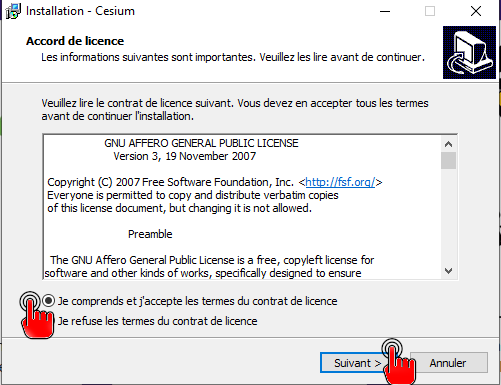
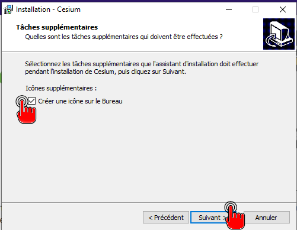
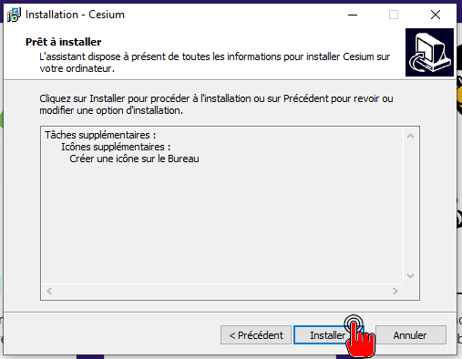
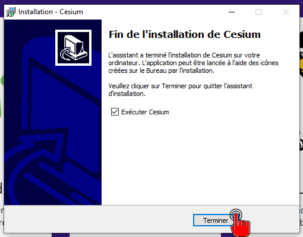

Installer Cesium Ğ1 sur Windows
Sur Windows 7 32 bits
Vous devez utiliser la méthode la version transportable de Cesium
Sur tous les autres Windows
Nous recommandons aussi la méthode la version transportable de Cesium ou bien l'extension Firefox car la dernière version de Cesium pour Windows est assez ancienne et n'est pas optimale pour effectuer certaines actions qui peuvent d'ailleurs s'avérer impossibles.
Voici néanmoins la méthode d'installation.
-
Téléchargez Cesium depuis la page téléchargement


-
Faites un double clic sur cesium-desktop-vXXX.exe

- Acceptez l’installation. Sous Windows 10, votre ordinateur va sans doute indiquer que les sources sont risquées. En effet, Cesium n’est pas “validé” par Microsoft.
-
Cliquez sur “informations complémentaires” :

-
Cliquez sur “Exécuter quand même” :

-
Acceptez l’installation (le mot de passe administrateur sera peut-être demandé)
- L’installateur va s’ouvrir. Suivez la procédure :
-
Choisissez la langue

-
Lisez et acceptez la licence (qui vous donne beaucoup de droits, profitez-en !)

-
Choisissez si vous voulez ou non créer une icône sur le bureau

- Cliquez sur “installer”

-
Cesium s’installe, laissez-le finir…

-
Cesium est installé, lancez-le tout de suite si vous voulez vous créer un compte !

- Et voilà ! Cesium est installé !